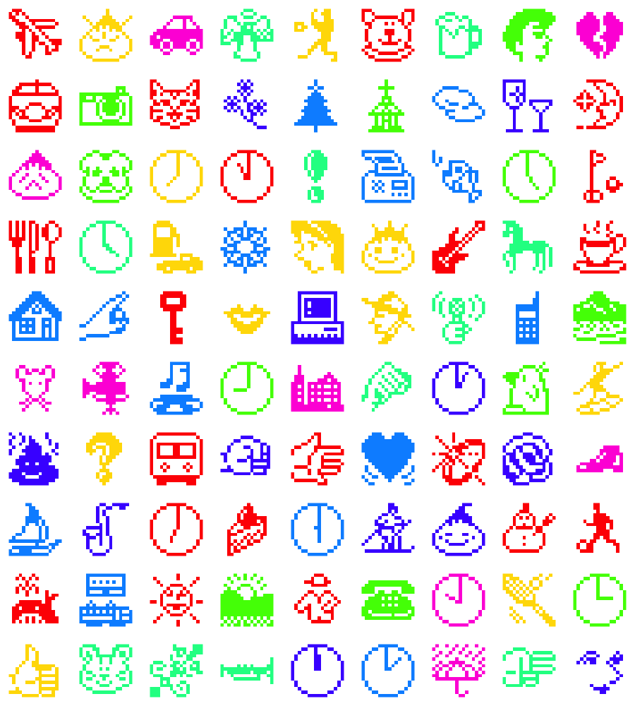
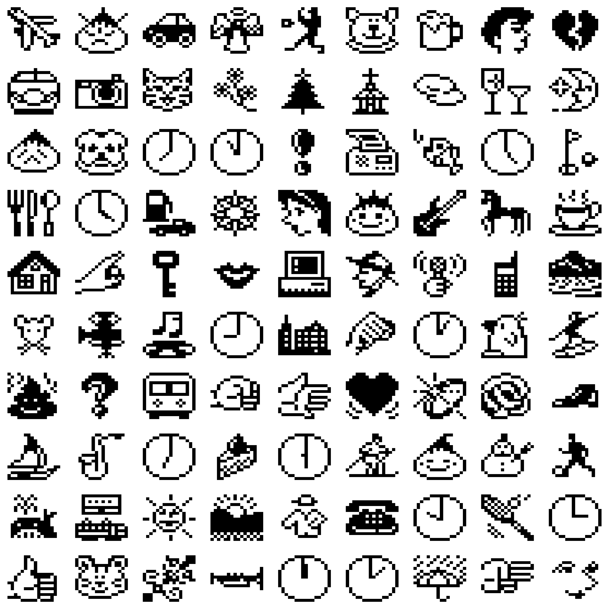
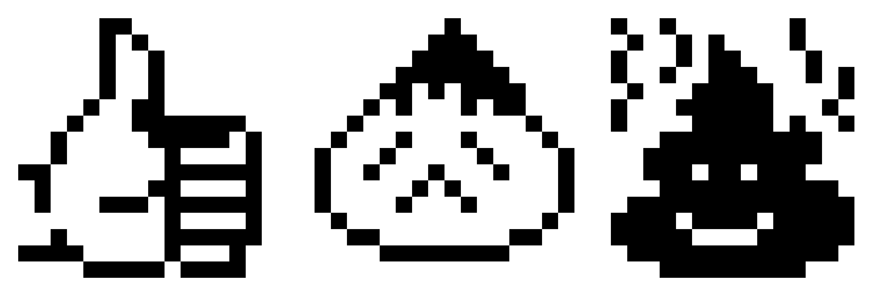
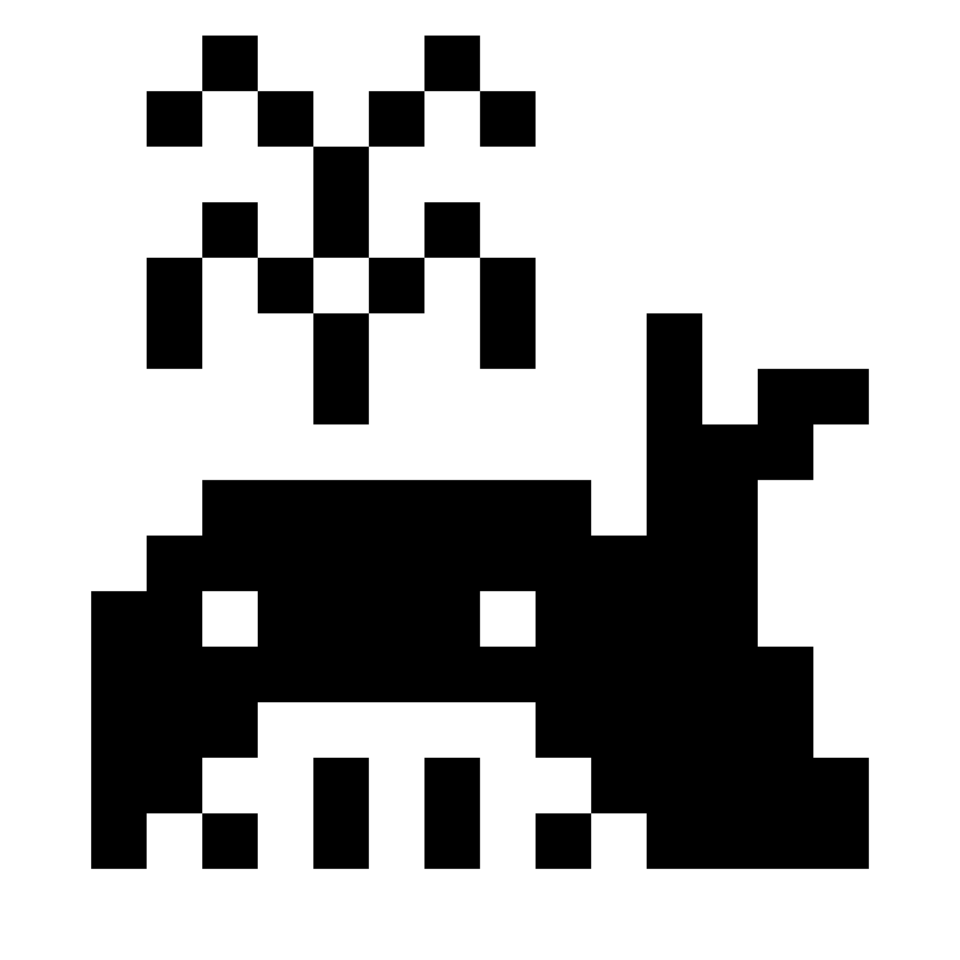

suppressPackageStartupMessages({
library(polite)
library(rvest)
library(purrr)
library(svglite)
library(png)
library(magick)
})
tl;dr
I wrote code to produce SVG versions of the ‘first-ever’ emoji set. Using R, I scraped Emojipedia with the {polite} package and then handled images with {png}, {magick} and {svglite}.
Important archival work
I posted recently on creating ‘pixel art’ in R and have since stumbled upon an old post by mikefc on the coolbutuseless blog with a method that makes it easier to convert from an image to its ‘pixels’.
I’ve also learnt recently of Emil’s development of the {emoji} package for R (superseding Hadley’s GitHub-only {emo} package).
Speaking of emoji, Jeremy Burge and colleagues have worked hard to archive and document them on Emojipedia. They posted recently about the discovery that the first emoji set was likely to be from SoftBank in 1997, rather than the NTT DOCOMO set that was acquired by MoMA.
As a mash-up of these things, I’ve decided to create SVG versions of the original SoftBank set. This format means that the images can be resized without loss of resolution and can be adapted in other ways, like being recoloured.
The approach:
- Scrape the Emojipedia hub page for SoftBank’s 1997 emojis
- Scrape each emoji’s dedicated page to retrieve its image path
- Download each image (gif format)
- Convert gifs to PNGs to matrices
- Convert matrices to plots to SVGs
The packages we need are all available from CRAN with install.packages():
All the code here is available in a GitHub repo.
Scrape politely
It’s best to scrape using the {polite} package, which allows you to identify yourself to the target website and observe any requests to delay between scrapes. I’ve written about this before.
First we bow() to the site by providing our information and saying where we want to scrape. The returned object contains information that {polite} uses to decide whether scraping is allowed and whether a crawl delay is required.
ep_bow <- bow(
url = "https://emojipedia.org/softbank/1997",
user_agent = "M Dray <https://www.matt-dray.com>"
)
ep_bow<polite session> https://emojipedia.org/softbank/1997
User-agent: M Dray <https://www.matt-dray.com>
robots.txt: 1 rules are defined for 1 bots
Crawl delay: 5 sec
The path is scrapable for this user-agentFrom the SoftBank 1997 hub page of Emojipedia we can scrape the URLs that lead to each emoji’s dedicated page. The {rvest} package has some handy functions that help us manipulate the retrieved HTML after scraping with {polite}, which rate-limits us to a retrieval every 5 seconds, given the information returned from our bow().
sb_urls <- scrape(ep_bow) |> html_nodes("a") |> html_attr("href")
sb97_urls <- sb_urls[grepl("/1997/", sb_urls) & !grepl("more", sb_urls)]
head(sb97_urls)[1] "/softbank/1997/grinning-face-with-big-eyes/"
[2] "/softbank/1997/smiling-face-with-smiling-eyes/"
[3] "/softbank/1997/disappointed-face/"
[4] "/softbank/1997/angry-face/"
[5] "/softbank/1997/pile-of-poo/"
[6] "/softbank/1997/kiss-mark/" From this we can get the full list of 90 emoji names for the 1997 SoftBank set.
Click to expand full list of emoji names
basename(sb97_urls) [1] "grinning-face-with-big-eyes" "smiling-face-with-smiling-eyes"
[3] "disappointed-face" "angry-face"
[5] "pile-of-poo" "kiss-mark"
[7] "broken-heart" "red-heart"
[9] "raised-hand" "victory-hand"
[11] "index-pointing-up" "thumbs-up"
[13] "raised-fist" "oncoming-fist"
[15] "boy" "girl"
[17] "man" "woman"
[19] "baby-angel" "person-surfing"
[21] "dog-face" "cat-face"
[23] "tiger-face" "horse-face"
[25] "mouse-face" "bear"
[27] "penguin" "spouting-whale"
[29] "fish" "cherry-blossom"
[31] "rose" "shortcake"
[33] "hot-beverage" "cocktail-glass"
[35] "beer-mug" "fork-and-knife"
[37] "mount-fuji" "house"
[39] "office-building" "church"
[41] "sunrise-over-mountains" "railway-car"
[43] "bullet-train" "station"
[45] "automobile" "fuel-pump"
[47] "sailboat" "airplane"
[49] "twelve-oclock" "one-oclock"
[51] "two-oclocktime" "three-oclock"
[53] "four-oclock" "five-oclock"
[55] "six-oclock" "seven-oclock"
[57] "eight-oclock" "nine-oclock"
[59] "ten-oclock" "eleven-oclock"
[61] "crescent-moon" "sun"
[63] "cloud" "umbrella-with-rain-drops"
[65] "snowman-without-snow" "christmas-tree"
[67] "soccer-ball" "baseball"
[69] "tennis" "flag-in-hole"
[71] "skis" "t-shirt"
[73] "running-shoe" "ring"
[75] "gem-stone" "musical-note"
[77] "microphone" "saxophone"
[79] "guitar" "trumpet"
[81] "mobile-phone" "telephone"
[83] "fax-machine" "laptop"
[85] "movie-camera" "camera"
[87] "key" "question-mark"
[89] "exclamation-mark" "trident-emblem" Now, thanks to the {purrr} package, we can iterate over these pages and extract each emoji image URL.1 You have to update your bow() with a nod() for each new page you want to scrape.
scrape_sb_gif <- function(sb_ext, bow = ep_bow) {
session <- nod(ep_bow, sb_ext)
images <- scrape(session) |> html_nodes("img") |> html_attr("src")
images[grepl(".gif$", images)]
}
sb97_img <- map_chr(sb97_urls, scrape_sb_gif)
head(sb97_img)[1] "https://em-content.zobj.net/thumbs/160/softbank/182/smiling-face-with-open-mouth_1f603.gif"
[2] "https://em-content.zobj.net/thumbs/160/softbank/182/smiling-face-with-smiling-eyes_1f60a.gif"
[3] "https://em-content.zobj.net/thumbs/160/softbank/182/disappointed-face_1f61e.gif"
[4] "https://em-content.zobj.net/thumbs/160/softbank/182/angry-face_1f620.gif"
[5] "https://em-content.zobj.net/thumbs/160/softbank/182/pile-of-poo_1f4a9.gif"
[6] "https://em-content.zobj.net/thumbs/160/softbank/182/kiss-mark_1f48b.gif" So, looks like these are stored on AWS servers.
Download and convert
Now we can download the emoji images. Here I’m going to download them to a temporary folder. I’ve also chosen to insert manually a random one- to five-second delay between downloads here to limit the impact on the server.
Note that the download.file() function prints an output for each downloaded file, but I’ve hidden this because there’s 90 outputs.
# Create temporary folder to write into
tmp <- tempdir()
# Download each file and give it the emoji name
walk2(
sb97_img,
basename(sb97_urls),
~{ cat("Downloading", .y, "\n")
download.file(.x, file.path(tmp, paste0(.y, ".gif")))
Sys.sleep(sample(1:5, 1)) }
)We actually want PNG format for the next step, not gifs. One way to do this is to read in the gifs as {magick} objects and then write them back out to png.
gif_paths <- list.files(tmp, pattern = ".gif", full.names = TRUE)
png_paths <- gsub("gif", "png", gif_paths)
walk2(
gif_paths,
png_paths,
~image_read(.x) |> image_write(.y, format = "png")
)Generate outputs
Pixel plots
First, we need a function to read the PNGs and create a 32 by 32 matrix representing the pixels of the image.
pixelate_emoji <- function(path_in) {
x <- readPNG(path_in)
y <- matrix(as.vector(x), 32)
t(y[nrow(y):1, 33:64])
}We can take the matrix output from pixelate_emoji() and create a plot of that emoji’s pixels using the image() function from base R.
plot_emoji <- function(emo_mat, col_px = "black", col_bg = "white") {
image(
emo_mat,
col = c(col_bg, col_px),
useRaster = TRUE,
axes = FALSE, xaxs = NULL, yaxs = NULL
)
}We can create a grid of them all.
par(mfrow = c(10, 9), mar = rep(1, 4))
walk(png_paths, ~pixelate_emoji(.x) |> plot_emoji())
Some are a bit peculiar. The faces look like onions or dumplings, for example. But the vast majority are recognisable as emoji that persist today. Note the poo with a smiley face; this emoji is not recent!
Here’s three emoji, but closer.
par(mfrow = c(1, 3), mar = rep(1, 4))
walk(
png_paths[c(82, 19, 55)],
~pixelate_emoji(.x) |> plot_emoji()
)
Or, in modern parlance: 👍😞💩
Write SVGs
We can save each plot into SVG (Scalable Vector Graphics) format using the {svglite} package, which can be put in a function that accepts a matrix that’s output from pixelate_emoji().
save_emoji <- function(emo_mat, file_out, dimn = 10) {
svglite(file_out, width = dimn, height = dimn)
par(mar = rep(0, 4), mfrow = c(1, 1))
plot_emoji(emo_mat)
dev.off()
}Now to convert all the PNGs to SVGs.
svg_paths <- gsub("png", "svg", png_paths)
walk2(
png_paths,
svg_paths,
~save_emoji(pixelate_emoji(.x), file_out = .y)
) We can demonstrate the benefit of SVGs by plotting a scraped PNG emoji (the excellent ‘spouting whale’) at small, medium and large sizes (25, 100 and 500 pixels square) and then do the same for the SVGs.
First the PNG, which look more fuzzy as the image gets larger:
Now the SVGs, which look sharp at all sizes:

This happens because an SVG is basically a text file of instructions on how to build the image that an interpreter can re-build from scratch at any size. Hence the word ‘scalable’ in ‘SVG’.
Licensing?
This was a project to remind me about ‘polite’ scraping and the powers of SVG graphics. But maybe the outputs could be useful for archival purposes or something?
I can’t be completely certain of licensing for this particular emoji set (even Emojipedia isn’t always sure), but I certainly can’t and don’t condone their use for any commercial activities; they belong to SoftBank. I’ve used a few images in this post for demonstration purposes only.
I’ve made the code available in a GitHub repo that you can use for personal investigation, but I haven’t included any of the outputs there. Let me know if you find a use for this, lol.
Environment
Session info
Last rendered: 2023-07-09 11:20:59 BSTR version 4.3.1 (2023-06-16)
Platform: aarch64-apple-darwin20 (64-bit)
Running under: macOS Ventura 13.2.1
Matrix products: default
BLAS: /Library/Frameworks/R.framework/Versions/4.3-arm64/Resources/lib/libRblas.0.dylib
LAPACK: /Library/Frameworks/R.framework/Versions/4.3-arm64/Resources/lib/libRlapack.dylib; LAPACK version 3.11.0
locale:
[1] en_US.UTF-8/en_US.UTF-8/en_US.UTF-8/C/en_US.UTF-8/en_US.UTF-8
time zone: Europe/London
tzcode source: internal
attached base packages:
[1] stats graphics grDevices utils datasets methods base
other attached packages:
[1] magick_2.7.4 png_0.1-8 svglite_2.1.1 purrr_1.0.1 rvest_1.0.3
[6] polite_0.1.3
loaded via a namespace (and not attached):
[1] jsonlite_1.8.7 compiler_4.3.1 selectr_0.4-2 Rcpp_1.0.11
[5] xml2_1.3.4 stringr_1.5.0 assertthat_0.2.1 spiderbar_0.2.5
[9] systemfonts_1.0.4 yaml_2.3.7 fastmap_1.1.1 mime_0.12
[13] R6_2.5.1 curl_5.0.1 knitr_1.43.1 htmlwidgets_1.6.2
[17] rlang_1.1.1 cachem_1.0.8 stringi_1.7.12 xfun_0.39
[21] fs_1.6.2 memoise_2.0.1 cli_3.6.1 magrittr_2.0.3
[25] digest_0.6.31 rstudioapi_0.14 lifecycle_1.0.3 ratelimitr_0.4.1
[29] vctrs_0.6.3 robotstxt_0.7.13 evaluate_0.21 glue_1.6.2
[33] rmarkdown_2.23 httr_1.4.6 tools_4.3.1 usethis_2.2.1
[37] htmltools_0.5.5 Footnotes
Note that I’m using the new (at time of writing) base R pipe,
|>, rather than the {magrittr} pipe,%>%, so you’ll need R v4.1 or higher to run this code.↩︎
Reuse
CC BY-NC-SA 4.0